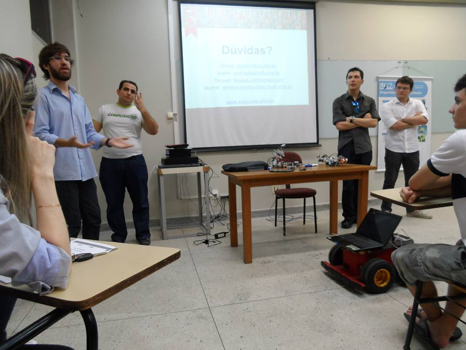
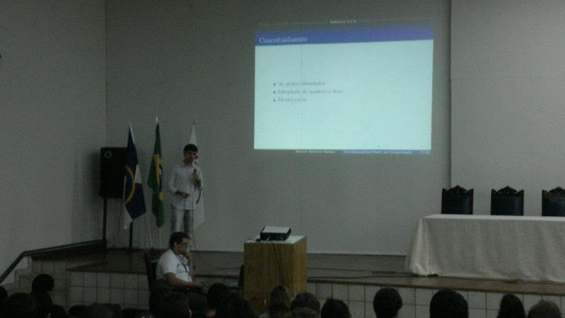
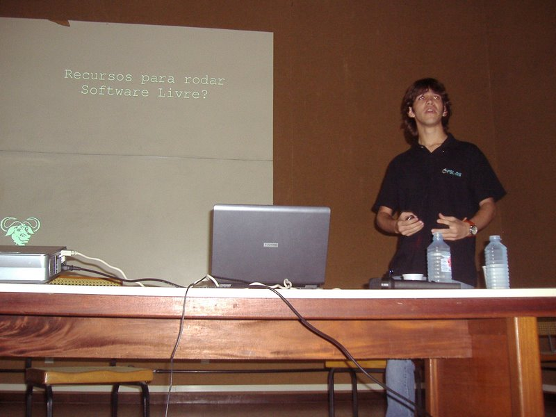
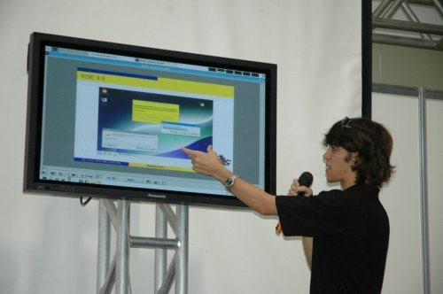

Event speaks given so far ;)
UFRN's Professions Exhibition (2013)
Academic Research in Computer Engineering



Opening Hangout of the PotiLivre Community Project (2013)
FLISOL [UNP] (2013)
OpenPACS: Managing medical images with Free Software
Talk a bit: Transformation through Information [UFPE] (2012)
Computer Multidisciplinarity: From Free Software to Biomedical Engineering

FLISOL (2009)
Free Software: The essence of the movement
VIII Seminar of Informatics and Computer Engineering [UFRN] (2007)
GNU+Linux: Strong GNU (arm) , Friendly Linux (hand). Is there colaborativity?
III Semana de Software Livre [UFC] (2007)
Free Software: Versatility, Productivity and Security

FLISOL / I Bienal of Informatics of Rio Grande do Norte (2007)
Taking the pinguim to your day to day: Necessiies of a Desktop environment with Free Software
